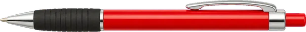
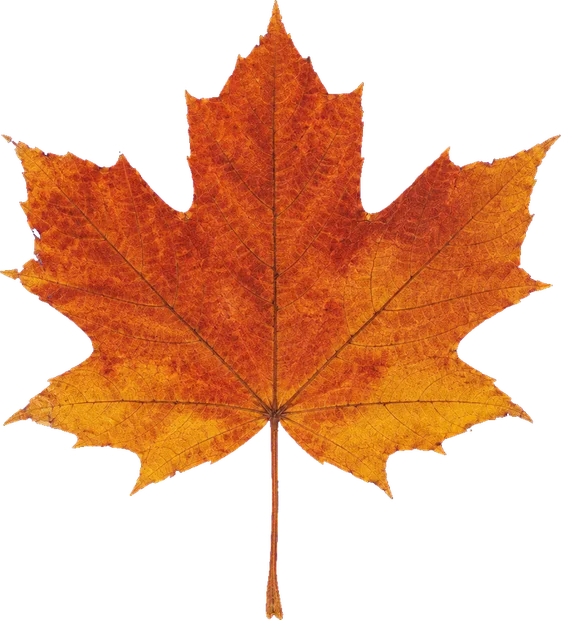
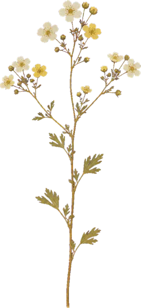
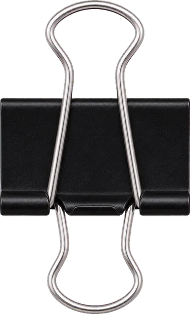
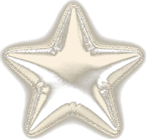

стрелки ← → листают · на фото, штамп, чек и наклейки можно нажимать — они звучат · нужный день быстрее найти в год




три вещи — и день превратится в разворот и маленький фильм
Дни хранятся только в этом браузере на этом устройстве. Письмо себе в будущее можно написать потом, на странице дня.